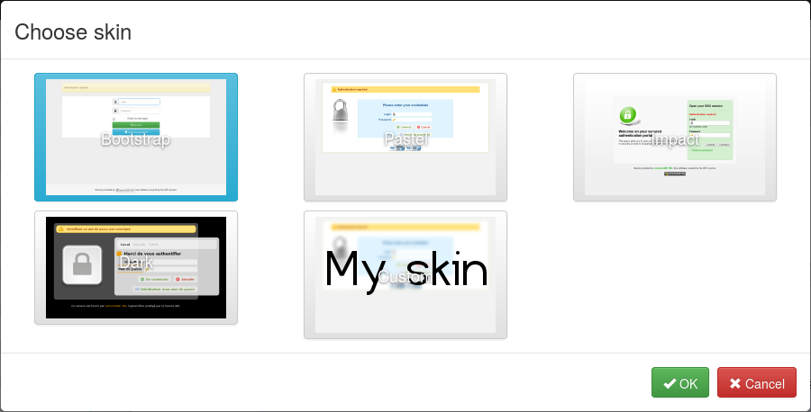
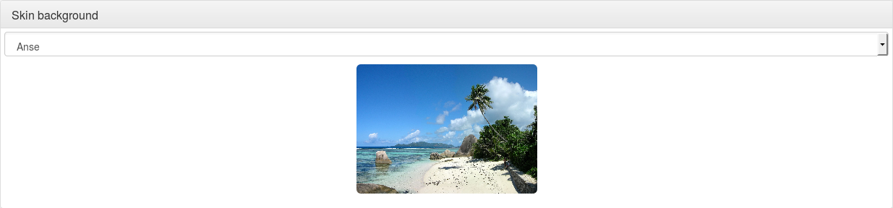

LemonLDAP::NG is shipped with 4 skins:
bootstrap skin, as other may be deprecated in the future.
On peut faire le sien, voir comment personnaliser le thème ci-dessous.
On peut changer le thème par défaut dans le manager : paramètres généraux > Portail > Personnalisation > Skin.

Select the Custom skin, then set the name of the skin you want to use in the input below.
Go in General Parameters > Portal > Customization > Skin background. You can define a background by selecting one of the available image. Use None to use the default skin background configuration.

On peut vouloir utiliser différents thèmes en fonction de l'URL demandée avant la redirection au portail ou en fonction de l'adresse IP de l'utilisateur.
Pour le réaliser, il faut créer une règle dans le manager : choisir paramètres généraux > Portail > Personnalisation > Règle d'affichage du thème et cliquer sur “Nouvelle clef”. Renseigner ensuite les deux champs ;
Un thème est composé de différents fichiers :
Un thème se réfère souvent au thème common, qui n'est pas un thème réel mais contient des objects partagés (tels les scripts, images et CSS).
Here we explain how to create a new skin, named myskin, from the bootstrap skin.
cd /usr/share/lemonldap-ng/portal-skins/ mkdir myskin cd myskin/ cp -a ../bootstrap/fonts/ . cp -a ../bootstrap/js/ . cp -a ../bootstrap/css/ . mkdir images
Créer ensuite des liens symboliques pour éviter de réécrire tous les fichiers HTML (sauf si c'est souhaité).
ln -s ../bootstrap/*.tpl .
Nous incluons des fichiers modèles qui peuvent être personnalisés :
Pour utiliser des fichiers personnalisés, effacer les liens et copier les fichiers dans le répertoire du thème :
rm -f custom* cp ../bootstrap/custom* .
Create a symlink in main skin directory:
ln -s /usr/share/lemonldap-ng/portal-skins/myskin /var/lib/lemonldap-ng/portal/skins/
Then you only have to edit JS/CSS and add your media to myskin/images. Mettre tous les codes HTML personnalisés dans les fichiers modèles personnalisés.
Pour configurer le nouveau thème dans le manager, selectionner le thème personnalisé et entrer le nom du nouveau thème dans le champ.
Messages are defined in source code. S'ils ne conviennent pas, il peuvent être surchargés. You just need to know the ID of the message (look at Portal/Simple.pm) and then add to lemonldap-ng.ini:
[portal] # Custom error messages error_0 = Big brother is watching you, authenticated user # Custom standard messages msg_22 = Your last connections
[portal] error_en_0 = Big brother is watching you, authenticated user error_fr_0 = Souriez vous êtes surveillés !
Des paramètres modèles sont définis dans le code source. Pour ajouter un paramètre de modèle, l'ajouter dans lemonldap-ng.ini:
[portal] # Custom template parameters tpl_myparam = world
On peut ensuite l'utiliser dans le modèle comme suit :
Hello <TMPL_VAR NAME="myparam">!
This node allows one to enable/disable buttons on the login page:
Connecté en tant que dans le menu